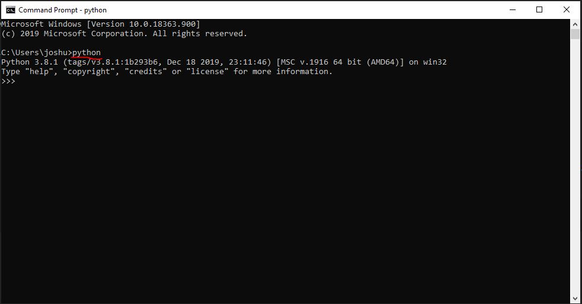

First steps in python
Open the command prompt and type 'python'
You will get REPL editor
R ead
E valuate
P rint
L oop

>>> 2+2
4
>>> 6*7
42
>>> x = 5
>>> x
5
>>> 3*x
15
>>> _*2
30
>>> print('Hello Python')
Hello Python
Difference between Python 2 and Python 3
In python 2 print stmt:
>>> print 'Hello Python'
Hello Python
But in python 3 print stmt is a function which is having the parenthesis
>>> print('Hello world')
Hello world
To close the REPL editor use ctrl+z, and
In Linux/Mac use ctrl+d to exit from the REPL editor.
Significant whitespace
Python follows indentation in code blocks.
>>> for i in range(5):
... x = i*10 # giving spaces(4) is a indented code block
... print(x)
0
10
20
30
40
Python expects us: - Readable code - No clutter - Human and computer can't get out of sync
Important points to remember:
- Prefer 4 spaces instead of
The above mentioned approach is called "Programming as Guido intended(indented) it".
Python culture
- The development of python managed through a series of documents called PEPs(Python Enhancement Proposels).
- One of the PEP is PEP8, that describes about the style guide for python code and It recommended 4 spaces indentation.
ZEN of Python(PEP-20):
>>> import this
The Zen of Python, by Tim Peters
Beautiful is better than ugly.
Explicit is better than implicit.
Simple is better than complex.
Complex is better than complicated.
Flat is better than nested.
Sparse is better than dense.
Readability counts.
Special cases aren't special enough to break the rules.
Although practicality beats purity.
Errors should never pass silently.
Unless explicitly silenced.
In the face of ambiguity, refuse the temptation to guess.
There should be one-- and preferably only one --obvious way to do it.
Although that way may not be obvious at first unless you're Dutch.
Now is better than never.
Although never is often better than *right* now.
If the implementation is hard to explain, it's a bad idea.
If the implementation is easy to explain, it may be a good idea.
Namespaces are one honking great idea -- let's do more of those!
Using the standard library
It is often refers battery includes
- You can access standard library by using 'import' keyword. Syntax: import module_name
>>> import math
>>> math.sqrt(9)
3.0
>>> help
Type help() for interactive help, or help(object) for help about object.
>>> math.factorial(5)
120
>>> math.factorial(17)
355687428096000
>>> n = 5
>>> k = 3
>>> math.factorial(n)/(math.factorial(k) * math.factorial(n-k))
10.0
>>> from math import factorial as fac
>>> fac(n)/(fac(k)*fac(n-k))
10.0
>>> fac(n)//(fac(k)*fac(n-k))
10